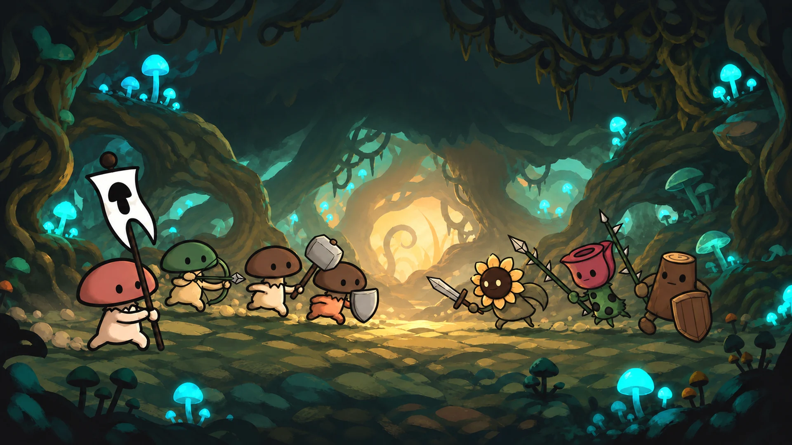
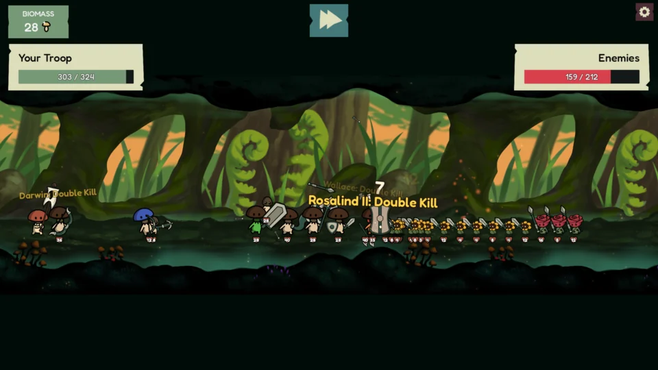
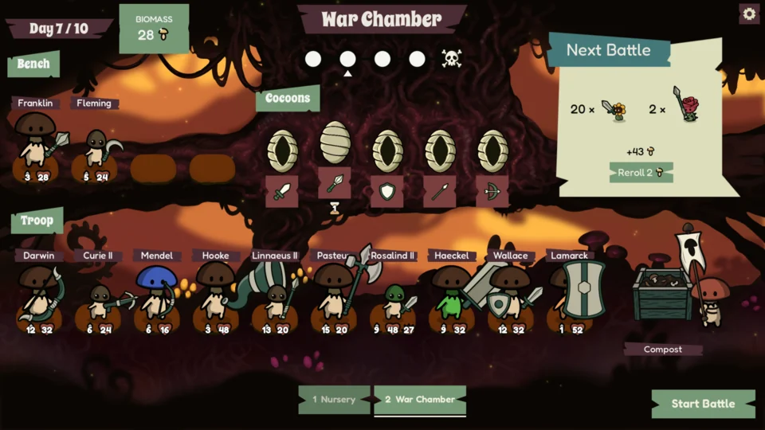
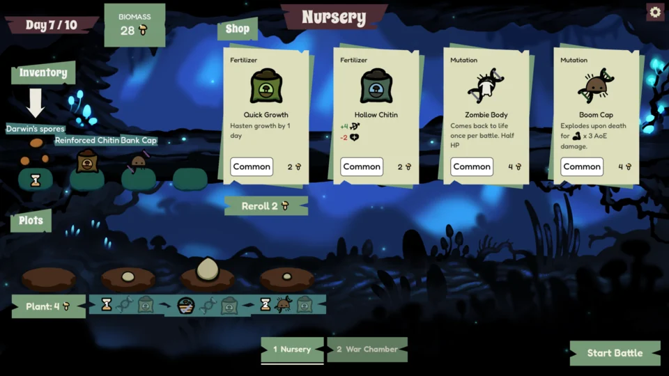
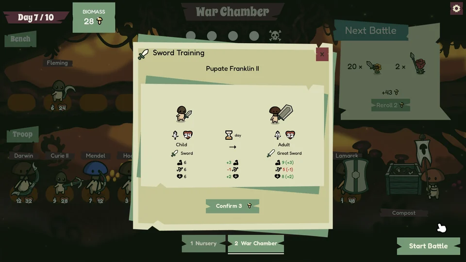
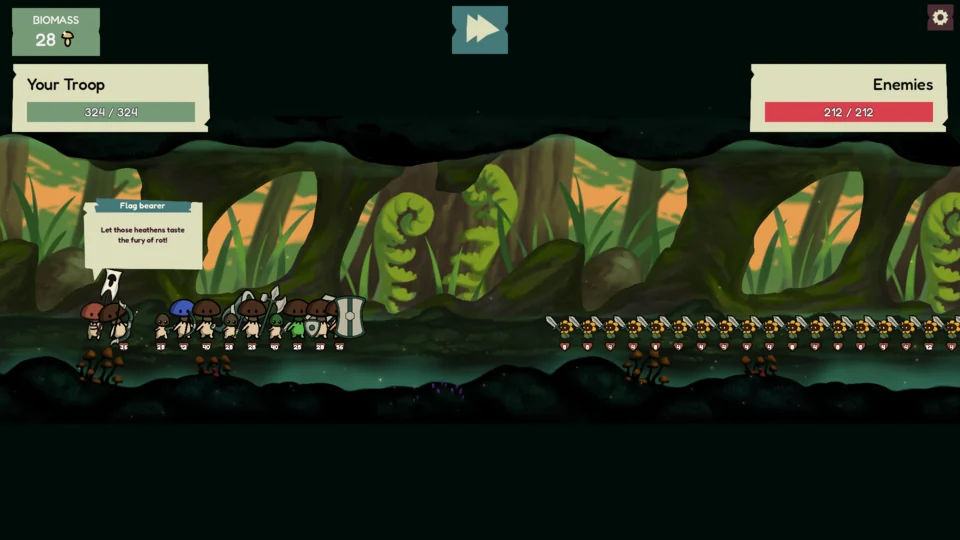
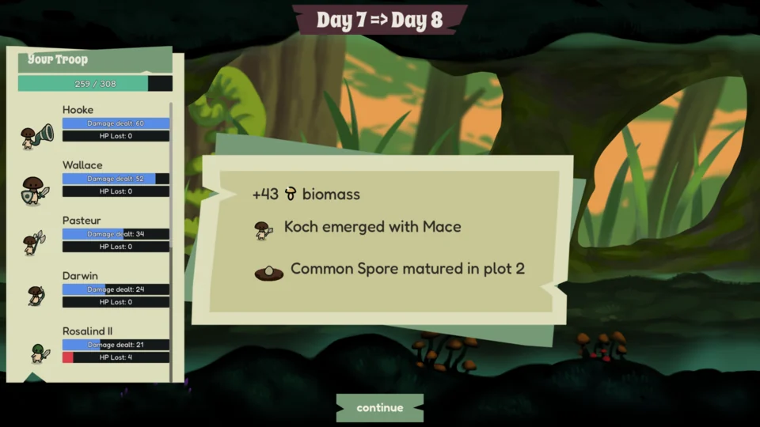
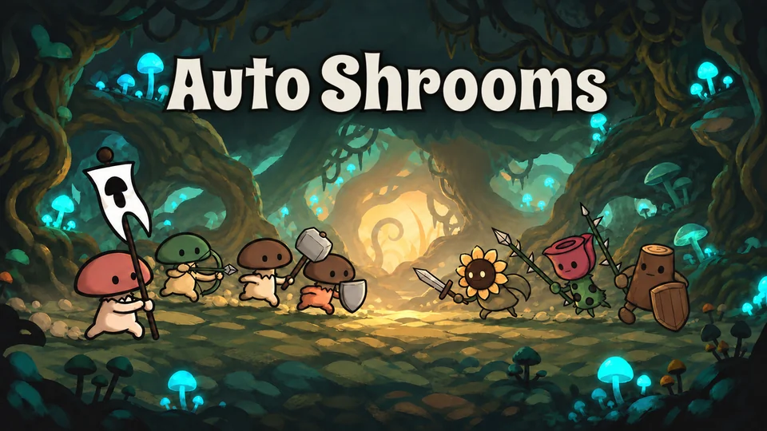
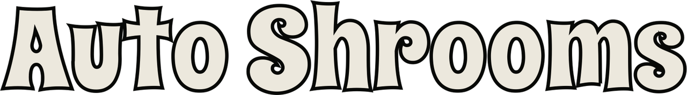

Cauldron Games · Presskit
Auto Shrooms
An auto-battler where you grow your own mushroom troop.
Grow. Train. Fight. Replant.

About the game
Auto Shrooms is an auto-battler where you grow your own mushroom troop. Plant spores in the Nursery, nurture them with Fertilizers and Mutations, and harvest new recruits. Train them in weapon schools, combine their fighting styles, and arrange your squad before sending it into battle against plant enemies.
Winning battles earns biomass to invest in your next generation. Fallen Adults leave lineage spores that preserve their weapon Trainings and Mutations, letting their descendants carry the fight forward. Grow, train, fight, and replant through a ten-day run.
Grow your troop
Plant spores and shape your next recruits with Fertilizers and Mutations.
Train & combine
Train in five weapon schools and discover combo weapons.
Prepare for battle
Scout the enemy army and arrange your squad before automated combat.
Continue the lineage
Replant fallen Adults to pass their weapon Trainings and Mutations to the next generation.
Survive ten days
Face escalating opposition and elite battles across a ten-day run.
Watch them grow. Watch them fight.
From the Nursery to the battlefield
Six gameplay captures. Select an image to open the full-size 1920 × 1080 JPG.












Artwork & logo


1920 × 1080

1920 × 1080


Everything for your story
About Cauldron Games
Cauldron Games is a solo indie game studio based in Zurich, founded by Pedro Caldeira. Its games aim to nudge players into seeing things differently.
For press enquiries, interviews or further information, contact Pedro Caldeira at pedro@cauldron.games.